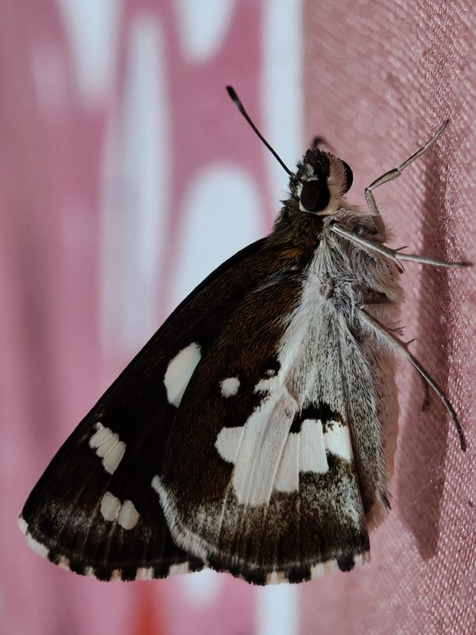

ग्रास डिमनGrass Demon
Udaspes folus · Hesperiidae · INS-0262

- Scientific name वैज्ञानिक नाम
- Udaspes folus (Cramer, 1775)
- Family कुल
- Hesperiidae
- Hindi हिंदी
- ग्रास डिमन
- Local names स्थानीय नाम
- grass demon, ghaas demon titli, white-banded grass skipper
- Status here यहाँ की स्थिति
- native
- Movement आवागमन
- Resident, here all year
- Known from कहाँ दर्ज
- Others have published records from the wider Awadh–Purvanchal plain, none yet from Basti–Ayodhya अवध–पूर्वांचल से दूसरों के प्रकाशित अभिलेख, बस्ती–अयोध्या से अभी नहीं
- IUCN IUCN
- not evaluated
- Review समीक्षा
- not yet reviewed
When to look कब देखें
Expected mainly in March, April, May, June, July, August, September, October, November. मुख्यतः मार्च, अप्रैल, मई, जून, जुलाई, अगस्त, सितंबर, अक्टूबर, नवंबर में अपेक्षित।
ग्रास डिमन / Grass Demon
Udaspes folus (Cramer, 1775) — Hesperiidae
ग्रास डिमन — नम बगीचों, हल्दी और अदरक के खेतों में छायादार स्थानों पर पाई जाने वाली काली और सफेद रंग की स्किपर तितली, जिसके पिछले पंखों पर एक विशाल दूधिया-सफेद धब्बा होता है।
Quick Identification त्वरित पहचान
| Feature | Description |
|---|---|
| Wingspan | Medium-sized among Indian skippers |
| Upperside ground | Velvety brownish-black |
| Forewing markings | Large central white hyaline patch and small apical dots |
| Hindwing markings | Massive, solid chalk-white discal patch |
| Underside pattern | Rich chestnut-brown with matching pure white patches |
| Antennae | Curved tips with distinct white-ringed shafts |
| Resting posture | Forewings semi-erect, hindwings spread flat horizontally |
Field tip: Look in damp, shaded garden corners near turmeric or ginger patches. A medium skipper darting in erratic zig-zags that settles with a gleaming, massive snow-white patch on velvety brownish-black hindwings is this species.
हिंदी — कैसे पहचानें: नम छायादार बगीचों में उड़ने वाली तितली जिसके पिछले पंखों के बीच में एक बड़ा चमकीला सफेद धब्बा होता है। बैठते समय यह आगे के पंखों को थोड़ा उठाकर और पिछले पंखों को चपटा फैलाकर रखती है।
Morphology आकारिकी
The dramatic contrast between the deep velvety chocolate-black ground colour and the glistening snow-white markings makes Udaspes folus one of the easiest Indian skippers to identify. On the forewing, the central semi-hyaline white patch is divided by dark veins into two or three large segments, complemented by two to three minute white subapical specks.
The hindwing upperside features an expansive, solid white patch that occupies more than half of the central discal area, with sharply defined borders against the dark ground. On the underside, the ground colour warms to a rich reddish chestnut or olive-brown, repeating the prominent white patches of the upper surface. The underside of the abdomen is boldly banded in chalky white.
The head and thorax are robust and clothed in dark brown pubescence; the palpi are densely clad with snow-white hairs beneath. The antennae have distinct white rings and gently curved clubs.
हिंदी: इसके पंख गहरे मखमली काले-भूरे होते हैं। आगे के पंखों पर पारदर्शी सफेद धब्बे और पिछले पंखों पर एक बहुत बड़ा दूधिया-सफेद धब्बा होता है जो इसे तुरंत पहचान देता है। नीचे से इसका पेट सफेद छल्लों वाला होता है।
Behaviour & Ecology व्यवहार और पारिस्थितिकी
Udaspes folus is an inhabitant of moist, shaded microhabitats. Unlike open-country sun-loving skippers, the Grass Demon thrives in the cool dappled light beneath orchard trees, banana (Musa paradisiaca) clumps, and bamboo thickets where ginger-family herbs flourish. It flies with an abrupt, darting, zig-zag motion, appearing as a whirling black-and-white blur before vanishing onto a leaf.
At rest, it perches characteristically on the upper surface of broad leaves with its forewings held semi-erect at an angle and hindwings spread horizontally flat. It is fond of nectar from low garden flowers and frequently suns itself in small forest openings in early morning.
During hot afternoons, it retreats into dense foliage where humidity remains high. Adults are particularly active during drizzly or overcast monsoon weather, darting rapidly from ginger clumps to flowering garden plants.
Males defend shaded territory glades beneath trees, flying out rapidly to investigate passing butterflies before settling back on prominent broad leaves.
हिंदी: यह तितली खुली धूप की जगह पेड़ों की छांव, नमी और बगीचों के कोनों में रहना पसंद करती है। यह बहुत तेजी से आड़ी-तिरछी उड़ान भरती है। बैठते समय यह चौड़े पत्तों पर आराम करती है और धूप निकलने पर पंख फैलाती है।
Life Cycle / Phenology जीवन चक्र
Females lay dome-shaped reddish or pinkish eggs singly on the underside of host leaves. The larva is smooth, translucent pale green with a dark reddish-brown heart-shaped head capsule and a prominent constricted neck collar.
The caterpillar cuts an oval or triangular flap from the leaf edge and folds it over, securing the shelter with strong silk strands to form a clean tubular retreat. It feeds on the leaf blade adjacent to the shelter, consuming foliage rapidly during the monsoon.
Pupation occurs within the folded leaf shelter, where the pupa is coated in a fine white powdery wax that acts as a water-repellent barrier. The pupal stage lasts about ten to fourteen days during warm humid conditions.
Overwintering occurs in the pupal stage within dry leaf rolls on the ground, with adults emerging when temperatures rise in spring.
हिंदी: मादा तितली पत्तों की निचली सतह पर लाल-गुलाबी अंडे देती है। इसकी इल्ली चिकनी और हल्के हरे रंग की होती है जो पत्ते को काटकर और रेशम से मोड़कर घर बनाती है। प्यूपा के ऊपर सफेद पाउडर जैसा मोम होता है जो उसे पानी से बचाता है।
Host Plants or Prey आहार
In India the larva is the leaf roller of Turmeric (Curcuma longa) and ginger (Zingiber officinale), rolling the leaves lengthwise and feeding inside (TNAU Agritech Portal). Funet also lists Fagraea racemosa, and Chou (1994) four species of Alpinia.
Larvae feed from within their leaf-roll shelters, chewing notches along leaf margins.
Adults are active nectar feeders, regularly visiting flowers of Sadabahar (Catharanthus roseus), Impatiens, Lantana (Lantana camara), and Asystasia in homestead gardens and forest edges.
हिंदी: इसकी इल्लियां हल्दी और अदरक के पत्तों को लंबाई में मोड़कर उनके भीतर रहती और खाती हैं। वयस्क तितलियां बगीचों के छोटे फूलों का रस पीती हैं।
Predators / Natural Enemies शत्रु
Larvae in leaf rolls are frequently attacked by parasitoid braconid wasps (Apanteles spp.) and tachinid flies.
Adults are preyed upon by insectivorous birds, as well as ambush predators such as praying mantises and crab spiders waiting on flowers in shaded groves.
Jumping spiders (Salticidae) frequently stalk resting adults on broad ginger leaves.
हिंदी: पत्तों के मुड़े हुए घेरे में रहने वाली इल्लियों पर परजीवी ततैये हमला करते हैं। उड़ती तितलियों को चिड़ियां पकड़ लेती हैं और छायादार पत्तों पर बैठी तितली को कूदने वाली मकड़ियां या सूंड़े अपना शिकार बनाते हैं।
Agricultural / Human Relevance कृषि प्रासंगिकता
Because its caterpillars feed on the foliage of cultivated Turmeric (Curcuma longa) and ginger (Zingiber officinale), the Grass Demon is occasionally regarded as a minor horticultural pest in backyard kitchen gardens.
However, leaf damage is rarely severe enough to justify pesticide intervention in commercial fields, as natural parasitoid wasps typically keep larval numbers below economic thresholds.
In home gardens, hand-picking folded leaf shelters is sufficient to manage localized infestations without chemicals.
हिंदी: हल्दी और अदरक की खेती में इसकी इल्लियां पत्तों को थोड़ा नुकसान पहुंचा सकती हैं, इसलिए इसे हल्का कृषि कीट माना जाता है। हालांकि प्राकृतिक परजीवी कीड़े इसकी संख्या नियंत्रित रखते हैं, जिससे किसी रासायनिक दवा की जरूरत नहीं पड़ती।
Expected Locally स्थानीय रूप से अपेक्षित
Not a field record. Written from published accounts for eastern Uttar Pradesh. No confirmed local sighting yet — if you have seen it, that is what the atlas needs.
अभी तक स्थानीय पुष्टि नहीं। यह विवरण प्रकाशित स्रोतों से है, किसी अवलोकन से नहीं।
GBIF holds published records from the wider Awadh–Purvanchal plain, none yet from Basti–Ayodhya. In eastern Uttar Pradesh, Udaspes folus is expected in shaded village kitchen gardens, damp orchard undergrowth, and rural plots where turmeric and ginger are cultivated. A confirmed first record requires a clear photograph with place and date submitted through the project portal.
हिंदी: अवध के हर गांव में जहां घरों के पास हल्दी या अदरक बोई जाती है, वहां बरसात के दिनों में इसके मिलने की पूरी उम्मीद है। स्थानीय प्रमाण के लिए इसकी फोटो भेजें।
Distribution वितरण
Global range: Widely distributed across India, Sri Lanka, Nepal, Bhutan, Bangladesh, and eastward through Myanmar, Thailand, Malaysia, and southern China to Taiwan and Indonesia.
In India: Common throughout the Gangetic plains and peninsular India wherever moisture and ginger-family plants occur (Varshney & Smetacek 2015).
In Uttar Pradesh: Documented from moist riverine belts, agricultural gardens, and shaded orchards.
In Basti district / eastern UP: Expected in rural settlements cultivating spices and shaded riverside groves.
हिंदी: यह पूरे भारत, श्रीलंका और दक्षिण-पूर्व एशिया में पाई जाती है। उत्तर प्रदेश के नमी वाले मैदानी भागों और बगीचों में यह बहुत आम है।
Research Questions शोध प्रश्न
- Does Udaspes folus cause economically significant foliar defoliation in commercial turmeric farming in eastern UP?
- What cues guide females in choosing between wild Curcuma and cultivated ginger in mixed agroecosystems?
- How does the waxy bloom on the pupa protect against monsoon fungal pathogens in high-humidity microhabitats?
- What is the seasonal parasitism rate of Apanteles wasps on larvae in Awadh vegetable gardens?
- क्या अवध में हल्दी की खेती वाले क्षेत्रों में यह तितली बरसात में बहुतायत में पाई जाती है?
- क्या इसकी पत्तियों को मोड़ने की आदत इसे तेज बारिश और धूप से बचाती है?
Similar Species मिलती-जुलती प्रजातियाँ
| Species | How to tell apart | हिंदी |
|---|---|---|
| Notocrypta feisthamelii | Possesses a broad white band across forewing but lacks the large white patch on hindwing upperside | आगे के पंख पर सफेद पट्टी होती है लेकिन पिछले पंख पर बड़ा सफेद धब्बा नहीं होता |
| Ancistroides nigrita | Completely plain blackish-brown skipper without large white hyaline patches on either wing | पूरी तरह सादी काली-भूरी तितली जिस पर सफेद धब्बों का पूर्ण अभाव होता है |
| Tagiades gana | Hindwing white patch restricted to lower tornal area, lacking large central white discal patch | सफेद रंग केवल निचले कोने तक सीमित होता है, मध्य में बड़े सफेद धब्बे का अभाव |
Field rule: Unmistakable due to the massive pure snow-white patch on the hindwing upperside and darting flight in shaded gardens.
हिंदी: पिछले पंखों के बीच में विशाल दूधिया-सफेद धब्बा और छायादार नम स्थानों पर उड़ने का व्यवहार इसे अन्य सभी तितलियों से अलग पहचान देता है।
Taxonomy & Classification वर्गीकरण
Original description. Udaspes folus was originally described as Papilio folus by Pieter Cramer in 1775 (Uitlandsche Kapellen, vol. 1, p. 118, pl. 74). It was subsequently designated as the type of Udaspes Moore.
Subspecies. Monotypic — no subspecies are recognized across its continental Asian range.
Family and order placement. Classified in the family Hesperiidae, subfamily Hesperiinae (grass skippers), tribe Ancistroidini. Well-known for bold white discal patches and reliance on monocotyledonous herbs.
IUCN status rationale. Not evaluated globally by the IUCN Red List. It is abundant and thrives in agricultural landscapes.
हिंदी: इसका वैज्ञानिक नामकरण 1775 में पीटर क्रेमर ने किया था। यह हेस्पेरिइडे कुल की तितली है और इसे प्रकृति में कोई खतरा नहीं है।
Photo Gallery फोटो गैलरी
No photos yet — add field photos to media/species/grass_demon/ and run node scripts/sync_photos.js.
Photos needed आवश्यक फोटो
- [ ] Adult basking with semi-erect forewings on broad leaf (पत्ते पर पंख फैलाए तितली)
- [ ] Underside pattern showing rich chestnut and bold white patches (पंखों के नीचे की बनावट)
- [ ] Larval leaf fold on turmeric or ginger leaf (हल्दी या अदरक के पत्ते पर इल्ली का घर)
References संदर्भ
- Cramer, P. (1775). Uitlandsche Kapellen, vol. 1. Amsterdam.
- Evans, W. H. (1932). The Identification of Indian Butterflies, 2nd ed. Bombay Natural History Society, Bombay.
- Wynter-Blyth, M. A. (1957). Butterflies of the Indian Region. Bombay Natural History Society, Bombay.
- Kehimkar, I. (2008). The Book of Indian Butterflies. Bombay Natural History Society, Oxford University Press, Mumbai.
- Varshney, R. K. & Smetacek, P. (2015). A Synoptic Catalogue of the Butterflies of India. Butterfly Research Centre, Bhimtal.
- TNAU Agritech Portal. Crop Protection: Turmeric and Ginger — Leaf roller, Udaspes folus. Tamil Nadu Agricultural University, Coimbatore.
- Chou, I. (ed.) (1994). Monographia Rhopalocerorum Sinensium, 2 vols. Henan Scientific and Technological Publishing House, Zhengzhou.
- GBIF Occurrence Data — Udaspes folus, India (2025).
Source file: species/fauna/insects/grass_demon.md